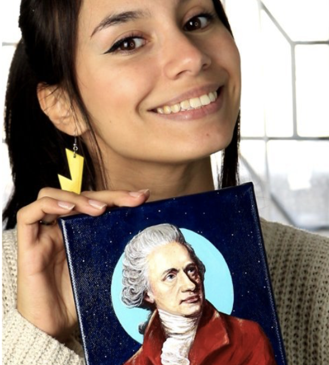
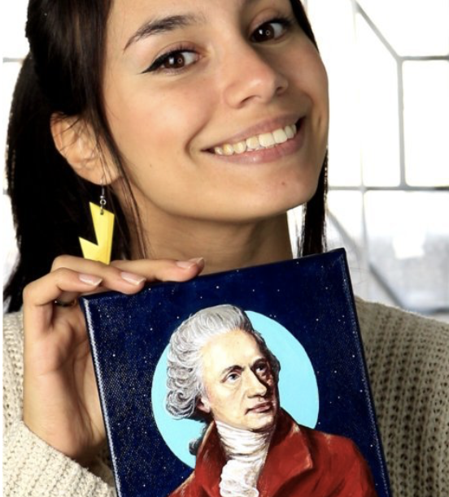

Acerca de mi
Francesca Valentina Marino
Francesca Valentina Marino
Soy creador digital, comunicador audiovisual, digital y artista visual con enfoque en la divulgación científica. Desde temprana edad, siempre me fascinó el vasto misterio del universo. Las noches despejadas pasadas mirando las estrellas y preguntándome sobre los secretos que ocultaban las galaxias y las nebulosas fueron el germen de una pasión que ha crecido con el tiempo. Este profundo interés por el cosmos me llevó a combinar mi amor por la ciencia y el arte, dando vida a un estilo único que fusiona la creatividad visual con la divulgación científica. Mi viaje artístico comenzó con un pincel en una mano y un libro de astronomía en la otra. La idea de representar a científicos que han hecho contribuciones significativas al conocimiento humano, así como los impresionantes fenómenos astronómicos, surgió de un deseo de acercar la ciencia a las personas de una manera visualmente atractiva y accesible. Cada obra de arte que creo es una celebración de la curiosidad humana y un tributo a aquellos que han dedicado sus vidas a explorar lo desconocido. Pintar científicos es mi forma de homenajear sus esfuerzos y de inspirar a otros a seguir sus pasos. Al mismo tiempo, mi trabajo con galaxias y nebulosas busca capturar la magnificencia del universo y despertar en los espectadores la misma maravilla y asombro que siento yo al observar el cielo nocturno. Como comunicadora audiovisual, mi objetivo es utilizar diversas plataformas digitales para difundir conocimientos científicos y compartir mi arte con una audiencia global. A través de videos, infografías y exposiciones virtuales, pretendo crear una conexión más profunda entre el arte y la ciencia, mostrando que ambas disciplinas pueden complementarse y enriquecerse mutuamente. La astronomía, en particular, es una fuente inagotable de inspiración para mí. La inmensidad del espacio, los misterios que aún nos quedan por descubrir y la belleza intrínseca de los objetos celestiales me impulsan a seguir explorando y creando. Mi esperanza es que, a través de mi trabajo, más personas se sientan motivadas a mirar hacia el cielo y a preguntarse sobre nuestro lugar en el universo.